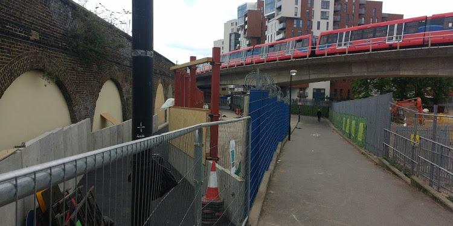

History
Deptford and Greenwich are different economically though close neighbours, one an industrial Naval town, the other a fashionable place of residence trading on its royal associations, physically being divided by Deptford Creek. The creek was not crossed by a permanent structure until 1815 at Creek Road. The railway bridge adjacent to the Ha'penny hatch was built in 1836 when London's first railway linked London Bridge and Greenwich. Neither bridge had a significant effect on either town's development. The
Please post your historical story or questions to hapennyhatch@deptfordcreek.net.